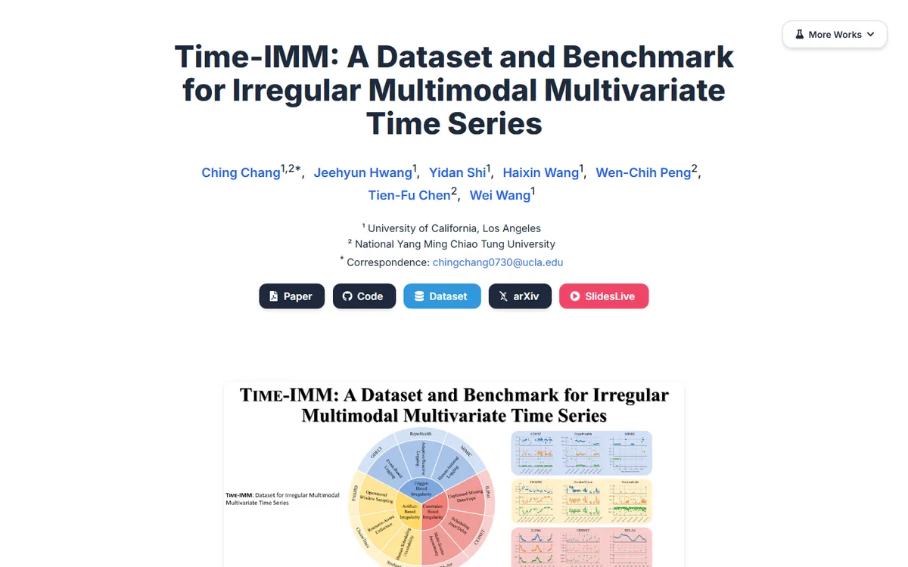

Time-IMM: A Dataset and Benchmark for Irregular Multimodal Multivariate Time Series
A tidy SaaS changelog for a dataset: heavy slate headline, a row of candy-coloured pills, and soft grey cards that never raise their voice.

Checked against the rendered page. No venue shown in the hero; the venue appears only in the BibTeX.
Why it is here
Clean, modern sans-serif type with colourful pill buttons, a tinted abstract band with a pink accent underline, and a rounded carousel card for the dataset figures. It is tidy and consistent throughout.
Overview
Color Palette
Typography
Inter
Time-IMM: A Dataset and Benchmark for Irregular Multimodal Multivariat
Abstract · Method · Results · BibTeX — 0123456789
Spacing & Shape
Page Modules
Guidelines
More like this

GAMEBoT: Transparent Assessment of LLM Reasoning in Games
A tidy game-arena scoreboard: a mascot crest over a navy title, then cool grey-blue gradient bands holding news cards and violet-headed score tables.

InstructPart: Task-Oriented Part Segmentation with Instruction Reasoning
A lab notebook in grey and white stripes, where the title marks its own key words in teal and a dashed-panel kettle explains the task before you read a line.

Symmetrical Visual Contrastive Optimization: Aligning Vision-Language Models with Minimal Contrastive Images
A two-color argument: cyan means the matching image, orange the mismatched one, and that code runs unbroken from the prose highlights into every figure across alternating grey and white bands.

Slamming: Training a Speech Language Model on One GPU in a Day
A one-chart argument: a big annotated scaling plot sits where the teaser video would be, then a grey abstract and a quiet grid of audio players tagged by GPU budget.

Reflection Separation from a Single Image via Joint Latent Diffusion
A pane of night glass you can wipe clean with one drag.

SALAD: Skeleton-aware Latent Diffusion for Text-driven Motion Generation and Editing
A quiet typeset monograph, its grey and white plates turning one after another.